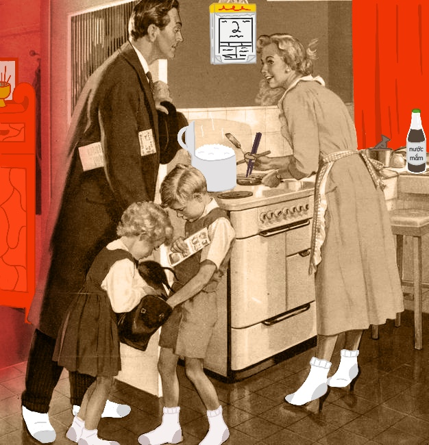
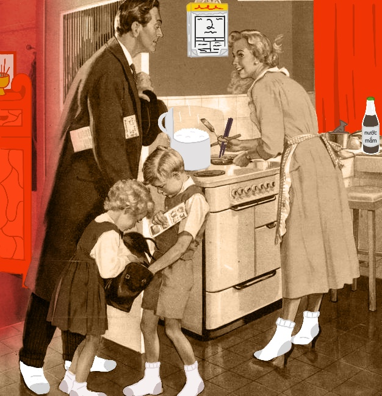
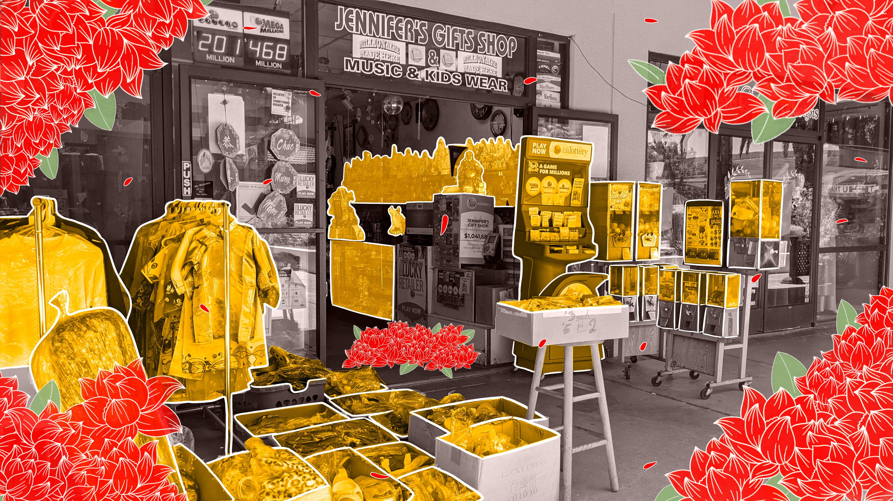
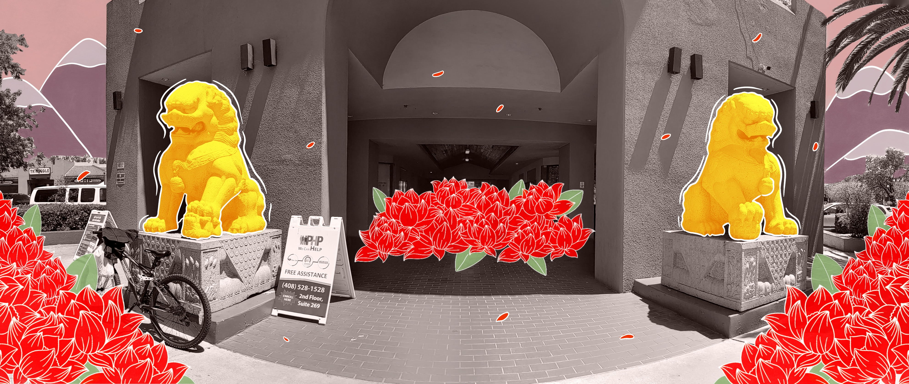
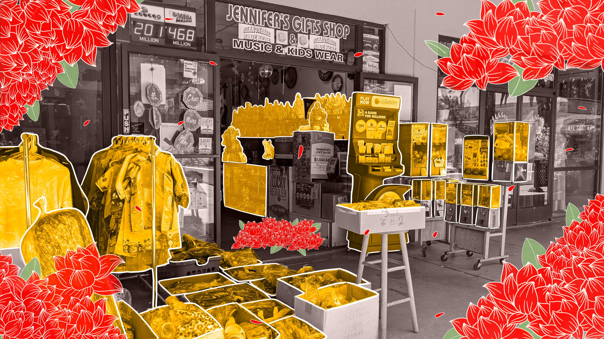
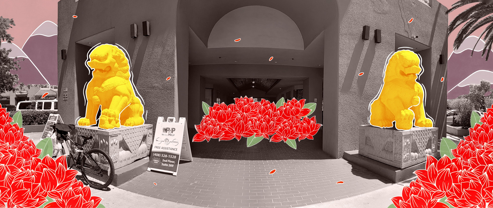

Rebinding the Thread procreate, mozilla hubs 2021.
This piece was inspired during one of my walks around my neighborhood. I had ended up at Lion Plaza, which is a well-known a public square in East San Jose consisting primarily of Vietnamese-owned businesses including restaurants, a supermarket, and more. As I walked around the area, I started to feel very nostalgic. I grew up going to this plaza almost every week with my parents. This was THE place to go whenever we needed food or groceries, household items, clothing, toys, comic books, etc. We also went here often to celebrate special occasions and to simply meet up with friends and family. I began to realize how disconnected I've become with my heritage especially during my early-teen to early-adult years. I remember feeling disgruntled with my culture and, at one point, I even questioned why we never went to Safeway or Albertson's to get our groceries. I remember wanting to bring sandwiches to school instead of my mom’s usual recipes, which consisted of rice, soup, and some sort of meat dish. I watched a lot of TV, especially sitcoms, and I remember comparing my lifestyle with what I saw on TV. Embarrassingly enough, I wanted to seem “less asian”.
This revelation encouraged me to create a space where I could re-connect myself with my heritage. The photographs I took were areas of Lion Plaza and I re-visualized them in a way that emphasizes the culture I grew up with. I illustrated these visuals on top of the photos and created a 3D space to host these images using Mozilla Hubs so that others can join in and view this environment.
This experience pushed me to explore the dynamics between the virtual world and the physical. Living in the digital age, we often seek the line that divides the two realities in order to gain a better grasp of our own. Rebinding the Thread is meant to embrace the merging of the two worlds and demonstrate the beauty of such arrangement. This process gives us creative control over how we’d want to perceive certain events or settings, opening up the door to speculative thinking and design.

 

 


